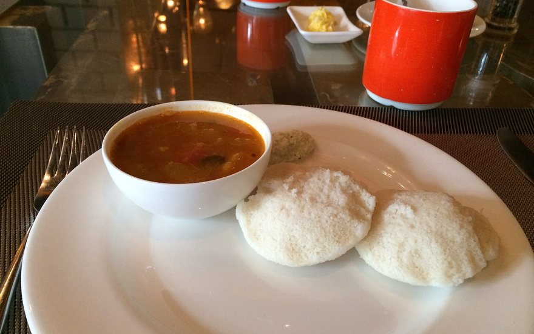

Morning Specials
Return to Home 1 for today’s fresh idli, podi roast, and live serving clock.
Go to Home 1Someone in the kitchen couldn't resist sneaking it straight off the steamer cloth before it reached your browser. Let’s guide you back to a piping-hot table.

Return to Home 1 for today’s fresh idli, podi roast, and live serving clock.
Go to Home 1Find our Covent Garden Piazza dining room map or book a family table.
Visit Contact